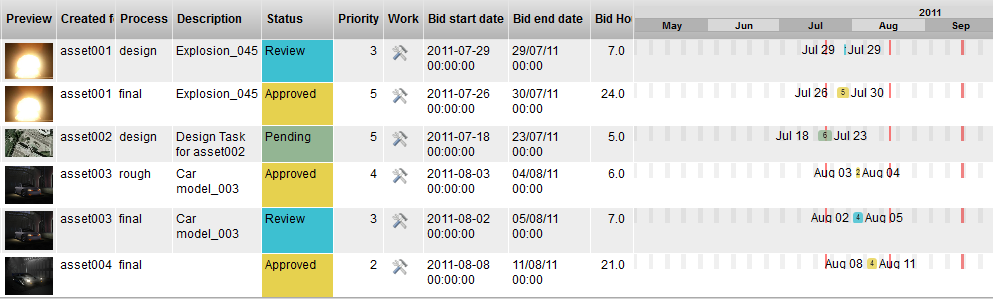
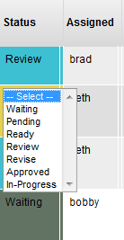
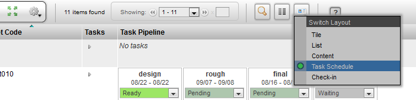

The TACTIC Tasks feature allows for the creation and management of Tasks. Each task in TACTIC include various properties that define and manage the work-flow of a user. Various markers such as; "Assigned", "Supervisor", " Bid start date", "Bid end date", and task "Status" enable all designated users real time information on the progress of a particular task. These tasks can be created aribtrarilry or on individual assets or files. Tasks are often driven by a pipeline process that a partiular item will move through during it’s life cycle.

Other details about tasks:
- Tasks can be assigned to any type of item in a project.
- Tasks can be grouped into milestones. The milestone column is used to categorize benchmark dates for a project.
Tasks can be assigned to particular users. When a task is assigned to a user, it appears in their My Tasks View.

- Tasks can be associated to a specific time-line. The "Bid start date" and the "Bid end date" column displays when the user is scheduled to work on a task, and when it is scheduled to be complete.
Bid duration (hours) can also be specified for tracking the alloted hours for a given task. These can later be compared to work hours for efficiency and cost analysis and reporting.

Managing Tasks with a Pipeline
A typical project will have assets that need to be tracked throughout the entire course of the project. If each of those assets goes through a pipeline with a various number of processes, the Tasks list can become vast quickly, therefore it’s important to filter views based on the needs of the user.
Example scenarios could include:
- A director wants a view that shows all items with a task status that is set to "review."
- A user wants to view only "character" items with task status set to "assigned."
- A producer wants to view all items with task status set to "approved."
- A coordinator wants to see all tasks that are due in the current week.
The Default TACTIC Task Status Pipeline
The default TACTIC task pipeline includes the following status'. Please note that these defaults are easily configurable to suit the needs of the project:
- Pending: The task is waiting for a user to start working on it.
- Ready: The task status has been set to ready by the supervisor or administrator.
- In Progress: The task is in progress or being worked on.
- Waiting: The user is waiting on some event before he or she can continue working on the task.
- Review: The supervisor is reviewing the task.
- Approved: The task is approved and complete.
*Review:*The supervisor has been notified to review a task.

After inserting a new item into a project, often the first things to do is to create a new task, assign it and have the appropriate user work on it.
Load any view of items you wish to track tasks for.

If the task status edit column is not in your view, you can add it with the column manager or switch the Layout to "Task Schedule"

If no tasks exist, click the (+) icon in the task status edit column. Another option is to select the items and choose Tasks → Add Tasks to Selected from the Gear Menu. Both approaches will load the task insert pop-up.

For now, click create tasks to create tasks for all process available in the pipeline.
Note
If a pipeline has not been setup for the particular Type you will not see any processes available in the UI. This will require building a pipeline which is covered in the TACTIC Setup Documentation
Once tasks are created, you will be able to assign them to users, assign dates, priority etc.